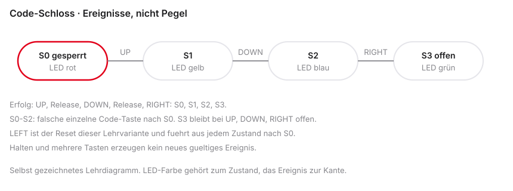

%%{init: {'theme': 'base', 'themeVariables': {'background': '#FFFFFF', 'primaryColor': '#FFFFFF', 'primaryBorderColor': '#E5E5EA', 'primaryTextColor': '#1D1D1F', 'lineColor': '#86868B', 'secondaryColor': '#F5F5F7', 'tertiaryColor': '#FFFFFF', 'mainBkg': '#FFFFFF', 'nodeBorder': '#E5E5EA', 'clusterBkg': '#F5F5F7', 'clusterBorder': '#E5E5EA', 'titleColor': '#1D1D1F', 'edgeLabelBackground': '#FFFFFF'}}}%%
graph LR
C[C-Code] --> Comp[Compiler]
Comp --> ASM[Assembler]
ASM --> HW[Hardware]
style Comp fill:#FFFFFF,stroke:#E2001A,stroke-width:2px !important
style C fill:#FFFFFF,stroke:#E5E5EA,stroke-width:1.5px !important
style ASM fill:#FFFFFF,stroke:#E5E5EA,stroke-width:1.5px !important
style HW fill:#FFFFFF,stroke:#E5E5EA,stroke-width:1.5px !important
Mikrocomputertechnik 1
Einheit 9: Wrap-Up & C-to-Assembly
Prof. Dr.-Ing. Daniel Klünder
Wrap-Up & C-to-Assembly
Der Kreis schließt sich
- Herzlich willkommen zur letzten regulären Vorlesung in Mikrocomputertechnik 1
- Intensives Semester: Computer von Grund auf verstanden
- Heute: Hochsprachen (C/C++) final mit RISC-V-Assembler verbinden
- Theorie kurz (ca. 45 Min.), danach ca. 3 Stunden Labor
- Abschluss: Mini-Projekt und gezielte Klausurvorbereitung
Agenda für den heutigen Tag
- Der Übersetzungsprozess — klassische C/C++-Toolchain
- C-to-Assembly —
if,while,for - Mini-Projekt (State Machine) — Briefing in Ripes
- Klausurvorbereitung — Organisatorisches und Aufgabentypen
- Q&A & Labor — freies Coden und Fragen
%%{init: {'theme': 'base', 'themeVariables': {'background': '#FFFFFF', 'primaryColor': '#FFFFFF', 'primaryBorderColor': '#E5E5EA', 'primaryTextColor': '#1D1D1F', 'lineColor': '#86868B', 'secondaryColor': '#F5F5F7', 'tertiaryColor': '#FFFFFF', 'mainBkg': '#FFFFFF', 'nodeBorder': '#E5E5EA', 'clusterBkg': '#F5F5F7', 'clusterBorder': '#E5E5EA', 'titleColor': '#1D1D1F', 'edgeLabelBackground': '#FFFFFF'}}}%%
graph LR
A[Toolchain] --> B[C zu Assembler]
B --> C[State Machine]
C --> D[Klausur-Tipps]
D --> E[Labor und Q&A]
style E fill:#FFFFFF,stroke:#E2001A,stroke-width:2px !important
style A fill:#FFFFFF,stroke:#E5E5EA,stroke-width:1.5px !important
style B fill:#FFFFFF,stroke:#E5E5EA,stroke-width:1.5px !important
style C fill:#FFFFFF,stroke:#E5E5EA,stroke-width:1.5px !important
style D fill:#FFFFFF,stroke:#E5E5EA,stroke-width:1.5px !important
Rückblick auf das Semester
- Einheit 1: Logikgatter und Transistoren
- Einheiten 2–4: RISC-V-Assembler und ABI
- Einheiten 5–6: Datenpfad und Control Unit
- Einheit 7: Pipelining — Durchsatz steigern
- Einheit 8: I/O und Syscalls — Außenwelt und OS
Die letzte Lücke
- Wochenlang Assembler in Venus und Ripes
- Industrie: große Programme in C, C++, Rust, …
- Frage: Wie wird aus
printf("Hallo");ausführbarer Maschinencode (viele Wörter / Syscalls)? - Antwort: die Toolchain (Werkzeugkette)
%%{init: {'theme': 'base', 'themeVariables': {'background': '#FFFFFF', 'primaryColor': '#FFFFFF', 'primaryBorderColor': '#E5E5EA', 'primaryTextColor': '#1D1D1F', 'lineColor': '#86868B', 'secondaryColor': '#F5F5F7', 'tertiaryColor': '#FFFFFF', 'mainBkg': '#FFFFFF', 'nodeBorder': '#E5E5EA', 'clusterBkg': '#F5F5F7', 'clusterBorder': '#E5E5EA', 'titleColor': '#1D1D1F', 'edgeLabelBackground': '#FFFFFF'}}}%%
graph LR
C[Hochsprache C] -->|Toolchain| ASM[RISC-V Assembler]
ASM -->|Assembler-Tool| Bin[Binärcode]
style ASM fill:#FFFFFF,stroke:#E2001A,stroke-width:2px !important
style C fill:#FFFFFF,stroke:#E5E5EA,stroke-width:1.5px !important
style Bin fill:#FFFFFF,stroke:#E5E5EA,stroke-width:1.5px !important
Die Toolchain
Der Übersetzungsprozess
riscv64-unknown-elf-gcc -march=rv32i -mabi=ilp32erzeugt RISC-V-Code- Ein nacktes
gcc main.cauf dem Host tut das nicht - Ausgabearten: Assemblertext, Objektdatei mit Relocation, gelinktes ELF
printfbraucht eine passende Laufzeit; ein ELF ist kein Venus-Assemblertext- Output des einen = Input des nächsten
%%{init: {'theme': 'base', 'themeVariables': {'background': '#FFFFFF', 'primaryColor': '#FFFFFF', 'primaryBorderColor': '#E5E5EA', 'primaryTextColor': '#1D1D1F', 'lineColor': '#86868B', 'secondaryColor': '#F5F5F7', 'tertiaryColor': '#FFFFFF', 'mainBkg': '#FFFFFF', 'nodeBorder': '#E5E5EA', 'clusterBkg': '#F5F5F7', 'clusterBorder': '#E5E5EA', 'titleColor': '#1D1D1F', 'edgeLabelBackground': '#FFFFFF'}}}%%
graph LR
A[main.c] --> B[Preprocessor]
B --> C[Compiler]
C --> D[Assembler]
D --> E[Linker]
E --> F[Executable]
style C fill:#FFFFFF,stroke:#E2001A,stroke-width:2px !important
style A fill:#FFFFFF,stroke:#E5E5EA,stroke-width:1.5px !important
style B fill:#FFFFFF,stroke:#E5E5EA,stroke-width:1.5px !important
style D fill:#FFFFFF,stroke:#E5E5EA,stroke-width:1.5px !important
style E fill:#FFFFFF,stroke:#E5E5EA,stroke-width:1.5px !important
style F fill:#FFFFFF,stroke:#E5E5EA,stroke-width:1.5px !important
1. Preprocessor und 2. Compiler
- Preprocessor: Text-Ersetzer für
#...(#include,#define) - Header-Text wird eingefügt; Makros expandiert
- Compiler: Syntax/Semantik, Optimierung; Ausgabe: RISC-V-Assembler (
.s)
3. Assembler
- Eingabe: Text mit
add,lw,beq - Ausgabe: 32-Bit-Maschinencode (Object-File
.o) - Nutzt Instruktionsformate R/I/S/B/J (Einheit 2)
- Noch nicht ausführbar: Adressen oft noch offen
4. Linker
- Compiler kennt die finale Adresse von
printfoft nicht jal/lw-Ziele können Lücken haben- Linker: alle
.o+ Libraries (z. B.libc) zusammenkleben - Finale Adressen eintragen
- Output: Executable (
.elf/.exe)
C-to-Assembly: Kontrollstrukturen
Muster des Compilers
- Wie wird übersetzt?
- Rolle: Compiler-Hut aufsetzen
if,while,for- Schablonen- Relevant für Klausur, Reverse Engineering, Debugging
%%{init: {'theme': 'base', 'themeVariables': {'background': '#FFFFFF', 'primaryColor': '#FFFFFF', 'primaryBorderColor': '#E5E5EA', 'primaryTextColor': '#1D1D1F', 'lineColor': '#86868B', 'secondaryColor': '#F5F5F7', 'tertiaryColor': '#FFFFFF', 'mainBkg': '#FFFFFF', 'nodeBorder': '#E5E5EA', 'clusterBkg': '#F5F5F7', 'clusterBorder': '#E5E5EA', 'titleColor': '#1D1D1F', 'edgeLabelBackground': '#FFFFFF'}}}%%
graph TD
C_Code[C Kontrollstruktur] -->|Muster| ASM[Assembler-Schablone]
style ASM fill:#FFFFFF,stroke:#E2001A,stroke-width:2px !important
style C_Code fill:#FFFFFF,stroke:#E5E5EA,stroke-width:1.5px !important
Variablen und Register
- Lokale Variablen: Compiler bevorzugt schnelle Register
- ABI: oft
s0-s11für langlebige Lokale - Register Pressure: Spilling auf den Stack (
sw/lw)
Das if-Statement (C-Code)
- Klassisches If-Else
- Vergleich
aundb - Gleich: Block 1; sonst Block 2
Das if-Statement (Assembler)
- C:
a == b→ Assembler oftbne(Gegenteil) - Ungleich: zum Else springen
- Am Ende des If-Blocks:
j End- sonst Rutschen in Else
Die while-Schleife (C-Code)
- Kopfgesteuert: Bedingung vor dem Körper
ihochzählen, bis 10
Die while-Schleife (Assembler)
- Label
While_Startam Kopf - C:
i < 10→ Assembler oftbge(Abbruch) - Am Ende:
j While_Start
Die for-Schleife (C-Code)
- Syntaktischer Zucker für while
- Init, Bedingung, Inkrement in einer Zeile
- Beispiel: Array-Summe
Die for-Schleife (Assembler)
- Initialisierung vor dem Label
- Bedingung direkt danach
- Body
- Inkrement
- Rücksprung
Arrays: arr[i] in Hardware
- C:
arr[i]= i-tes Element - CPU: Bytes -
int= 4 Byte - Adresse = Base + \((i \times 4)\) oft als
sllium 2
Funktionen: ABI, a0 und ret
- Parameter in
a0,a1, … (ABI, Einheit 4) - C-
return= Wert nacha0, dannret(Sprung überra) - Leaf-Beispiel unten; nicht-leaf braucht Stack-Prolog/Epilog (Klausur-Typ 2)
Compiler-Output in Echt (Godbolt)
- Lehrübersetzung und Compileroutput unterscheiden
-O0verspricht keine feste Belegung vons0/s1-O3verspricht keinen bestimmten Pipelineplan- Konstanten wie
a = 5; b = 10; c = a + bkönnen vollständig entfallen - Compiler Explorer: Version,
-march=rv32i,-mabi=ilp32dokumentieren
Warum Assembler lernen?
- Maschinenverständnis: Caches, Stalls, Spilling
- Embedded: Bootloader, ISR, Treiber - C und Assembler gemischt
- Security / Reverse Engineering: oft nur Disassembly
Labor & Klausur
Übergang in die Praxisphase
- Formaler Vorlesungsteil beendet
- Ca. 3 Stunden Praxis
- Abschlussprojekt: Finite State Machine (FSM)
- Danach: Klausur-Formalia und Aufgabentypen
%%{init: {'theme': 'base', 'themeVariables': {'background': '#FFFFFF', 'primaryColor': '#FFFFFF', 'primaryBorderColor': '#E5E5EA', 'primaryTextColor': '#1D1D1F', 'lineColor': '#86868B', 'secondaryColor': '#F5F5F7', 'tertiaryColor': '#FFFFFF', 'mainBkg': '#FFFFFF', 'nodeBorder': '#E5E5EA', 'clusterBkg': '#F5F5F7', 'clusterBorder': '#E5E5EA', 'titleColor': '#1D1D1F', 'edgeLabelBackground': '#FFFFFF'}}}%%
graph LR
A[Theorie] --> B[FSM-Briefing]
B --> C[Klausur-Tipps]
C --> D[Freies Labor]
style D fill:#FFFFFF,stroke:#E2001A,stroke-width:2px !important
style A fill:#FFFFFF,stroke:#E5E5EA,stroke-width:1.5px !important
style B fill:#FFFFFF,stroke:#E5E5EA,stroke-width:1.5px !important
style C fill:#FFFFFF,stroke:#E5E5EA,stroke-width:1.5px !important
Projekt: Die State Machine
- Finite State Machine (FSM): zu jedem Zeitpunkt genau ein Zustand
- Eingaben (Taster) → Übergänge (Transitions)
- Fundament: Ampeln, Spiele, Protokolle, Steuerungstechnik
Code-Schloss
- S0 gesperrt, LED rot; S1 nach UP, LED gelb; S2 nach DOWN, LED blau; S3 offen, LED grün
- Sequenz der Ereignisse: UP, DOWN, RIGHT
- Halten erzeugt höchstens ein Ereignis; Release trennt die Drücke
- LEFT ist der Reset dieser Lehrvariante und führt nach S0
- Falsche einzelne Code-Taste setzt S0 bis S2 nach S0; S3 bleibt bis Reset offen
- Halten und mehrere Tasten erzeugen kein gültiges Ereignis

Trace: UP, Release, DOWN, Release, RIGHT, Release führt von S0 über S1 und S2 nach S3.
Umsetzung in Assembler
- Zustandsvariable in sicherem Register (z. B.
s0) - Endlosschleife: Turm aus
beqzu State-Labels - Im State: Arbeit (LED, Taster), dann
s0ändern,j Loop
Laboraufgabe: Das Code-Schloss
- Ripes: D-Pad + LED-Matrix
- Geheimcode: OBEN, UNTEN, RECHTS
- Start: LED rot (State 0)
- Richtig: State 1 gelb → State 2 blau → grün (offen)
- Falsche einzelne Code-Taste in S0 bis S2: zurück nach S0
- S3 bleibt bei UP, DOWN und RIGHT offen; LEFT setzt zurück
- Halten erzeugt kein zweites Ereignis; mehrere Tasten kein gültiges Ereignis
Die Klausur (Organisatorisches)
- Schriftliche Klausur; Dauer und Hilfsmittel nur verbindlich, wenn die aktuelle Kursangabe sie bestätigt
- Orientierung: Reference Sheet liegt bei, Opcodes müssen nicht auswendig sitzen
Klausur-Typ 1: Code-Analyse (Tracing)
- Assembler-Snippet + Startwerte
- Rolle: menschlicher Simulator
- Frage z. B.: Wert in
t2nach Ablauf?
Klausur-Typ 2: Code schreiben
- Das gezeigte
formiti < 5summiert 0+1+2+3+4 und ergibt 10 - Die Summe 1 bis 10 gleich 55 ist eine andere Aufgabe
Klausur-Typ 3: Hardware / Datenpfad
- Einheiten 5–6: Single-Cycle-Blockdiagramm
- Datenweg eines
lwmarkieren - Control-Zeile für z. B.
orausfüllen
| Befehl | ALUSrc | MemtoReg | RegWrite | MemRead | MemWrite | Branch | ALUOp |
|---|---|---|---|---|---|---|---|
or |
0 | 0 | 1 | 0 | 0 | 0 | 10 |
- Main Control ist für alle R-Types gleich;
orvs.addentscheidet die ALU Control (funct3)
Klausur-Typ 4: Pipelining & Hazards
- Einheit 7: Timing-Raster IF/ID/EX/MEM/WB
- RAW-Hazards erkennen; Forwarding-Pfeile
- Unvermeidbarer Stall (Load-Use)
| Befehl | 1 | 2 | 3 | 4 | 5 | 6 | 7 |
|---|---|---|---|---|---|---|---|
lw t0, 0(a0) |
IF | ID | EX | MEM | WB | ||
add t1, t0, t0 |
IF | ID | ID gehalten | EX | MEM | WB |
Tipps zur Vorbereitung
- Alte Laborblätter ohne Vorlage neu lösen; Venus Step nutzen
- Godbolt: kleine C-Snippets,
-O0, Sprünge analysieren - Lerngruppen: erklären, warum
MemtoRegbeiswDon’t Care (\(X\)) ist
Feedback & Evaluation
- Evaluation nur über den tatsächlichen Hochschulweg; Anonymität nur, wenn das Verfahren sie zusichert
- QR-Code und Link nicht erfinden, wenn sie hier nicht vorliegen
Das war Mikrocomputertechnik 1
- Fundamentaler Meilenstein erreicht
- Computer als klare, logische Maschine
- Später in C/Java/Python: physikalische Konsequenzen im Blick
- Danke für Mitarbeit - viel Erfolg in der Klausur
Q&A und Hands-On
- Restliche Zeit: Ihnen
- Ripes: Code-Schloss (FSM)
- Dozent zum Debuggen und für Klausurfragen da
- Labor ist eröffnet
%%{init: {'theme': 'base', 'themeVariables': {'background': '#FFFFFF', 'primaryColor': '#FFFFFF', 'primaryBorderColor': '#E5E5EA', 'primaryTextColor': '#1D1D1F', 'lineColor': '#86868B', 'secondaryColor': '#F5F5F7', 'tertiaryColor': '#FFFFFF', 'mainBkg': '#FFFFFF', 'nodeBorder': '#E5E5EA', 'clusterBkg': '#F5F5F7', 'clusterBorder': '#E5E5EA', 'titleColor': '#1D1D1F', 'edgeLabelBackground': '#FFFFFF'}}}%%
graph LR
Ende[Theorie] --> Code[Ripes]
Code --> Safe[State Machine]
Safe --> Fragen[Klausur Q&A]
Fragen --> Win[Erfolg]
style Win fill:#FFFFFF,stroke:#E2001A,stroke-width:2px !important
style Ende fill:#FFFFFF,stroke:#E5E5EA,stroke-width:1.5px !important
style Code fill:#FFFFFF,stroke:#E5E5EA,stroke-width:1.5px !important
style Safe fill:#FFFFFF,stroke:#E5E5EA,stroke-width:1.5px !important
style Fragen fill:#FFFFFF,stroke:#E5E5EA,stroke-width:1.5px !important